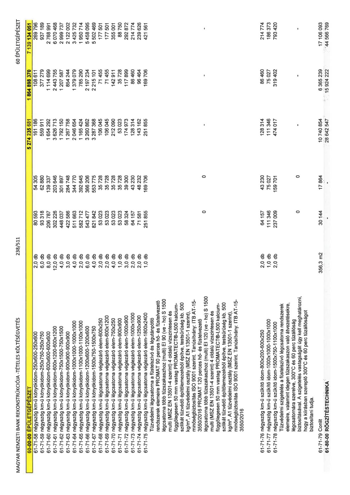

| Tétel | Menny. | Egys. | Anyag e.ár (net HUF) | Díj e.ár (net HUF) | Anyag összesen (net HUF) | Díj összesen (net HUF) | Anyag+Díj összesen (net HUF) |
|---|---|---|---|---|---|---|---|
| 61-71-58 négyszög km-ű könyökidom-250x600-250x600 | 2,0 | db | 80 593 | 54 305 | 161 186 | 108 611 | 269 796 |
| 61-71-59 négyszög km-ű könyökidom-250x750-250x750 | 6,0 | db | 93 318 | 62 880 | 559 911 | 377 279 | 937 189 |
| 61-71-60 négyszög km-ű könyökidom-600x600-600x600 | 8,0 | db | 206 787 | 139 337 | 1 654 292 | 1 114 699 | 2 768 991 |
| 61-71-61 négyszög km-ű könyökidom-600x1200-600x1200 | 12,0 | db | 302 226 | 203 646 | 3 626 713 | 2 443 755 | 6 070 468 |
| 61-71-62 négyszög km-ű könyökidom-750x1500-750x1500 | 4,0 | db | 448 037 | 301 897 | 1 792 150 | 1 207 587 | 2 999 737 |
| 61-71-63 négyszög km-ű könyökidom-900x900-900x900 | 3,0 | db | 422 586 | 284 748 | 1 267 758 | 854 244 | 2 122 002 |
| 61-71-64 négyszög km-ű könyökidom-1000x1000-1000x1000 | 4,0 | db | 511 663 | 344 770 | 2 046 654 | 1 379 079 | 3 425 732 |
| 61-71-65 négyszög km-ű könyökidom-1100x1000-1100x1000 | 2,0 | db | 582 712 | 392 645 | 1 165 424 | 785 290 | 1 950 714 |
| 61-71-66 négyszög km-ű könyökidom-1200x600-1200x600 | 6,0 | db | 543 477 | 366 206 | 3 260 862 | 2 197 234 | 5 458 095 |
| 61-71-67 négyszög km-ű könyökidom-1500x750-1500x750 | 4,0 | db | 821 842 | 553 775 | 3 287 368 | 2 215 101 | 5 502 469 |
| 61-71-68 négyszög km-ű légcsatorna véglezáró elem-600x250 | 2,0 | db | 53 023 | 35 728 | 106 045 | 71 455 | 177 501 |
| 61-71-69 négyszög km-ű légcsatorna véglezáró elem-600x1200 | 2,0 | db | 53 023 | 35 728 | 106 045 | 71 455 | 177 501 |
| 61-71-70 négyszög km-ű légcsatorna véglezáró elem-750x250 | 4,0 | db | 53 023 | 35 728 | 212 090 | 142 911 | 355 001 |
| 61-71-71 négyszög km-ű légcsatorna véglezáró elem-900x900 | 1,0 | db | 53 023 | 35 728 | 53 023 | 35 728 | 88 750 |
| 61-71-72 négyszög km-ű légcsatorna véglezáró elem-1000x900 | 3,0 | db | 58 324 | 39 300 | 174 973 | 117 399 | 292 872 |
| 61-71-73 négyszög km-ű légcsatorna véglezáró elem-1000x1000 | 2,0 | db | 64 157 | 43 230 | 128 314 | 86 460 | 214 774 |
| 61-71-74 négyszög km-ű légcsatorna véglezáró elem-1250x900 | 2,0 | db | 71 581 | 48 232 | 143 162 | 96 464 | 239 626 |
| 61-71-75 négyszög km-ű légcsatorna véglezáró elem-1800x2400 | 1,0 | db | 251 855 | 169 706 | 251 855 | 169 706 | 421 561 |
| Tűzvédelmi légcsatorna a füstelszívó és légutánpótló rendszerek elemeire PROMAT 90 perces hő- és füstelvezető légcsatorna több tűzszakaszhoz (multi) EI 90 (ve - ho) S 1500 multi (MSZ EN 13501-4 szerint) 4 oldalú vízszintesen és függőlegesen 50 mm vastag PROMATECT®-L500 kalcium-szilikát tűzvédő építőlemezekből építve, testsűrűség kb. 500 kg/m³, A1 tűzvédelmi osztály (MSZ EN 13501-1 szerint), minőségbiztosítás ISO 9001 szerint. Tanúsítvány: ITB AT-15-3550/2016 PROMAT 120 perces hő- és füstelvezető légcsatorna több tűzszakaszhoz (multi) EI 120 (ve - ho) S 1500 multi (MSZ EN 13501-4 szerint) 4 oldalú vízszintesen és függőlegesen 50 mm vastag PROMATECT®-L500 kalcium-szilikát tűzvédő építőlemezekből építve, testsűrűség kb. 500 kg/m³, A1 tűzvédelmi osztály (MSZ EN 13501-1 szerint), minőségbiztosítás ISO 9001 szerint. Tanúsítvány: ITB AT-15-3550/2016 | 0 | 0 | 0 | 0 | 0 | 0 | 0 |
| 61-71-76 négyszög km-ű szűkítő idom-800x200-600x250 | 2,0 | db | 64 157 | 43 230 | 128 314 | 86 460 | 214 774 |
| 61-71-77 négyszög km-ű szűkítő idom-1000x1000-1000x1000 | 1,0 | db | 111 346 | 75 027 | 111 346 | 75 027 | 186 373 |
| 61-71-78 négyszög km-ű szűkítő idom-1500x750-1100x1000 | 2,0 | db | 237 009 | 159 701 | 474 017 | 319 402 | 793 420 |
| Tűzvédelmi szigetelés a füstelszívó légcsatorna rendszerek elemeire, valamint idegen tűzszakaszon való átvezetésekre, légcsatornára szerelve, 300°C és 60 perc tűzállóság biztosításával. A szigetelés vastagságát úgy kell meghatározni, hogy a kiírásban szereplő 300°C és 60 perc tűzállóságot biztosítani tudja. | 0 | 0 | 0 | 0 | 0 | 0 | 0 |
| 61-71-79 Conlit | 356,3 | m2 | 30 144 | 17 864 | 10 740 854 | 6 365 239 | 17 106 093 |
| 61-80-00 RÖGZÍTÉSTECHNIKA | 0 | 0 | 0 | 0 | 28 642 547 | 15 924 222 | 44 566 769 |
